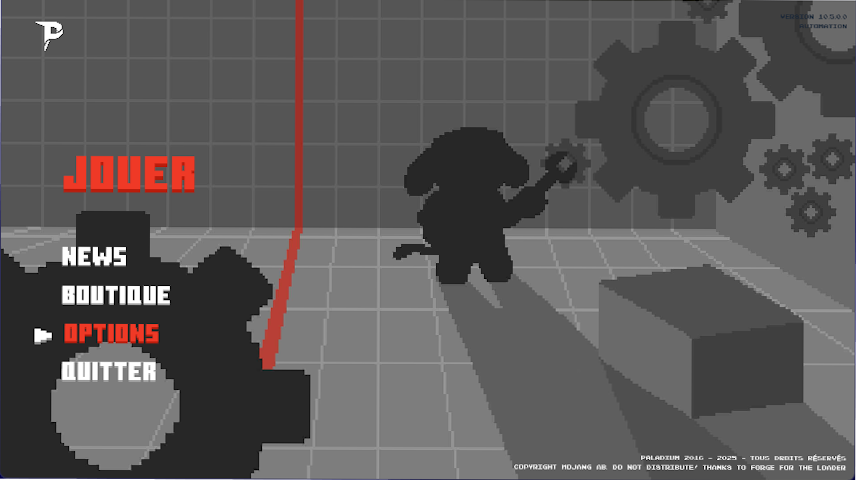
Lien du Paladium : https://paladium-pvp.fr/
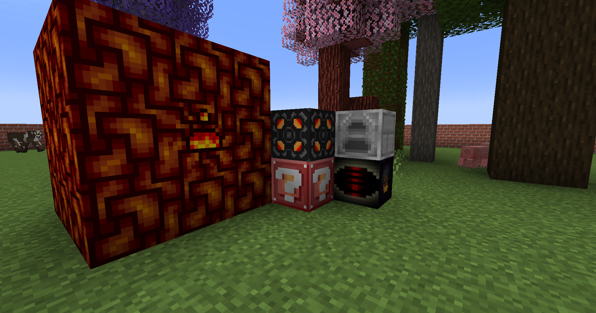
Le Mod reproduit les élément original du Mod original en adaptant certaines fonctionalité pour coller au nouvelle version de Minecraft tout en étant open-source sur Github car le mod est communautaire pour report de bug ainsi que pour les demande de fonctionnalité
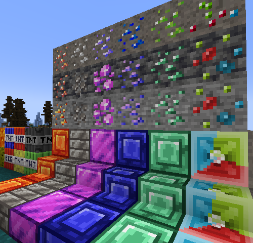
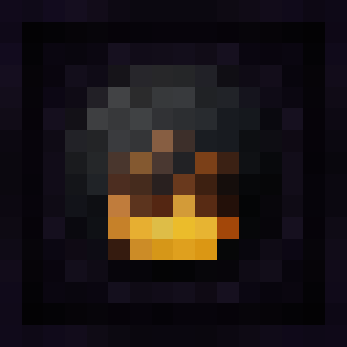
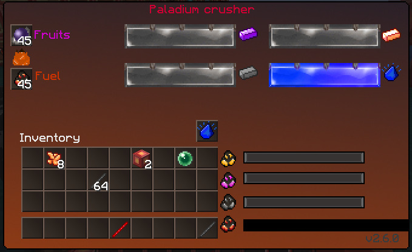
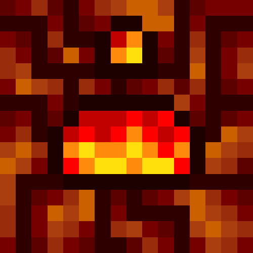
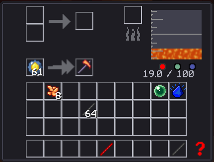
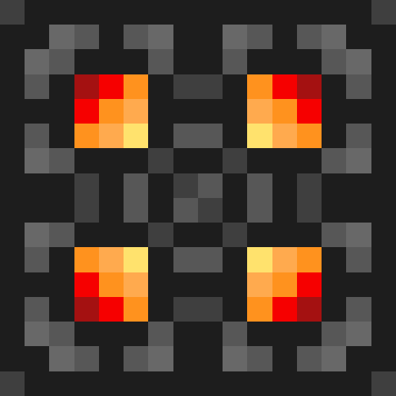
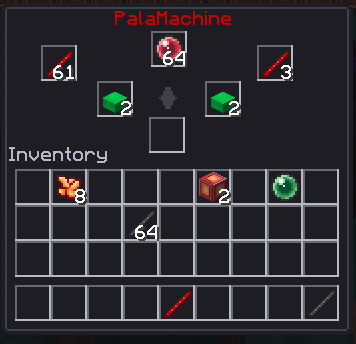
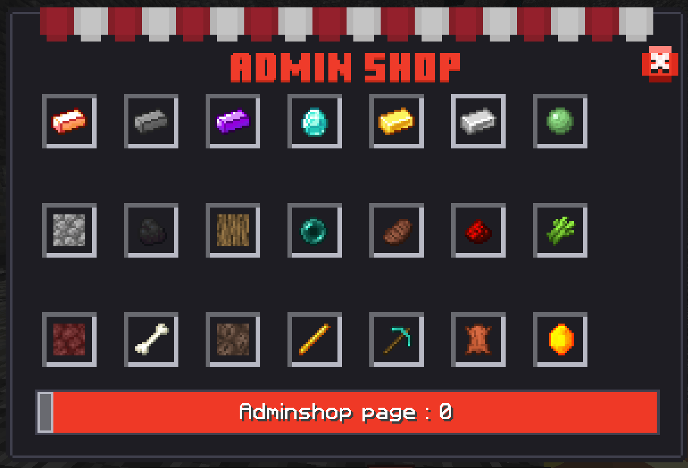
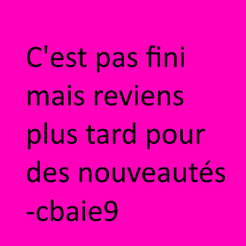
Lien du Modrinth
Lien du CurseForge